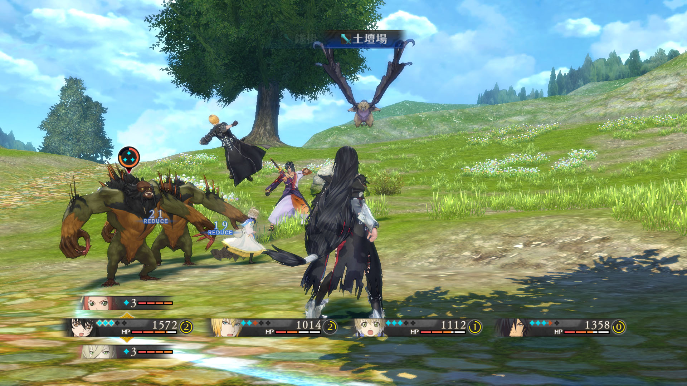

Tales of Berseria (Japanese: テイルズ オブ ベルセリア, Hepburn:
Teiruzu Obu Beruseria) is an action role-playing video game
developed and published by Bandai Namco Entertainment for
PlayStation 3, PlayStation 4, and Windows. It is the
sixteenth main entry in the Tales series and a prequel of
Tales of Zestiria. It was released in Japan for PlayStation
3 and PlayStation 4 in mid-August 2016, and was released
worldwide for PlayStation 4 and Windows in late January
2017.
Gameplay

Tales of Berseria is a role-playing video game, where
players navigate the game's world through the game's
characters from a third-person perspective. As with
previous Tales games, characters can interact through skits,
animated clips that play outside cutscenes and battle:
characters are represented by head-and-shoulder portraits,
and conversations can range from serious to comedic.
New to the series' Skit systems is a cut-in effect,
where at certain moments within skits characters in various
poses will appear in response to the dialogue.
Linear Motion Battle System (LMBS)
As with previous Tales titles, the game uses a variation of
the Linear Motion Battle System (LMBS). Berseria's version
is dubbed the "Liberation-LMBS": when in the battle zone,
players can freely move around the arena and rotate the
camera at will. Characters fight using physical and magical
attacks, along with performing skills known as Artes that
have various effects on enemies such as stunning them or
causing status ailments. Artes can be directly mapped to
different control buttons. Abilities outside attacking
include guarding against attacks, side-stepping around
opponents, and escaping from battle.
New Battle System
A key element in battles is the Soul Gauge, which replaces
the move-governing mechanics of earlier Tales games: each
character has a separate gauge showing up to five Souls,
which are used up when Artes are used. While characters can
still attack with a depleted Soul Gauge, their attacks can
be easily deflected by enemies, but the Soul Gauge
automatically recharges with time. Souls are dropped by
enemies in battle that can be "stolen" to refill the gauge,
a mechanic that enemies can also use to steal Souls from
the player. If enough of the Soul Gauge is full characters
can activate unique states called the Break Soul, where
they can exceed their combo limit and bring unique effects
into battle: for instance, Velvet's Break Soul triggers her
arm to become bestial and different elemental attacks are
triggered depending on enemy type.
The main party consists of four characters, which can all be
assigned as the controlled character during battle, with the
other available playable characters held in reserve. While
primarily designed for single-player, local multiplayer for
battles is supported. A mechanic called the Switch Blast can
be used when changing characters: by consuming a portion of
the Blast Gauge, the controlled party member switches out
for a reserve member, who delivers a free attack. The Blast
Gauge is also depleted by performing power attacks called
Mystic Artes.
Story
Setting
Berseria takes places in the Holy Midgand Empire, a powerful
country that rules over this world's archipelago of a
continent. The game's world is shared with Tales of
Zestiria, although the events occur 1000 years before the
latter. There are countless numbers of islands around, and
Midgand's rule crosses even the seas. Areas of land and
islands in the game are divided into "territories." Along
with humans, one of the other main races is the Malakhim
(singular: Malak), supernatural spirits whose wills are
sealed and used by humans as slaves to utilize their magical
abilities after being made visible to even normal humans due
to the Advent, an incident 3 years prior to Velvet's escape
from her prison. Throughout the empire, a disease known as
Daemonblight causes those infected to lose their humanity
and sense of rationality and transform into monsters known
as Daemons, who pose a threat to the world. Along with the
rulers of the Holy Midgand Empire exists a theocratic order
known as the Abbey, who are of great political and religious
importance and are influential in imperial affairs. The
Exorcists, soldiers from the Abbey, are tasked with bringing
peace and order by purging the world of Daemons and are
willing to go to extremes to reach their goal.
Plot
When she was a child, Velvet Crowe and her younger brother
Laphicet were saved by her brother-in-law Artorius when a
Scarlet Night happened and daemons attacked their village;
Velvet's pregnant older sister Celica was killed during the
event known as the "Opening". Seven years later, Velvet
takes care of her sickly brother with Artorius. The Scarlet
Night returns, with the entire village succumbing to the
Daemonblight: when Velvet finds Artorius, she sees him
sacrifice her brother as part of a ritual, known as the
"Advent". Artorius attempts to use her for the Advent as
well, but she fights back and the Daemonblight possesses her
arm, mutating it and turning her into a Daemon called a
"Therion", with the ability to absorb Daemons. In a rage,
she slaughters the nearby Daemons before passing out. She
awakes in a prison for Daemons on the island Titania,
swearing to kill Artorius and avenge her brother's murder. A
group of beings known as Malakhim, who were previously only
visible to "resonant" individuals, become visible to most
people of the world after the "Advent". Over the next three
years, Artorius forms the Abbey to bring peace to the Holy
Midgand Empire, becoming the Abbey's "Shepherd" and is seen
as a savior by the people for establishing the Exorcists
using the malakhim.
After three years in prison, Velvet is freed by Seres,
Artorius' former malak, who has broken away from him. During
her escape, Velvet aids fellow prisoners Rokurou and Magilou
and fights against the Praetor Exorcist Oscar Dragonia.
Seres takes a fatal attack when Oscar turns one of his
Malakhim servants into a dragon to face them. Absorbing
Seres at her own request, Velvet makes a final attack on
Oscar that blinds him in one eye before he escapes. Velvet
realizes at this point that Seres must be a reincarnation of
her deceased sister, Celica. Velvet and company then escape
the island. Over the course of her journey to get her
revenge, she also meets Laphicet, a Malak formerly in
service to Praetor Exorcist Teresa Linares until being
kidnapped and named by her; Eleanor, an Abbey Exorcist who
questions their methods; and Eizen, a Malak who travels with
pirates who grant the group sanctuary. They are also joined
by Bienfu, a Normin Malak originally contracted with Magilou
and who had since been bound to Eleanor while Magilou was
imprisoned. Eleanor is initially reluctant to join Velvet,
attempting suicide before being asked to spy on the group
and then learning the Abbey's full plans.
Development
The scenario was written by Naoki Yamamoto, who had previously
worked on Zestiria. Despite being a distant prequel to Tales of
Zestiria—taking place in the distant past and containing
references—the game's story was designed to be able to work on
its own. This distant connection concept was inspired by the
developer's wish to emulate the similar distant narrative
connection between Tales of Phantasia and Tales of Symphonia. It
also featured nods to earlier entries in the series, such as the
party's ship being named after a similar transport ship in Tales
of Eternia. The main theme of Tales of Berseria is the conflict
between emotion and reason, with Velvet being the incarnation of
emotion and rage. This theme is represented in the game's title,
which stems from the term "Berserker", legendary warriors who
were imbued with uncontrollable power.